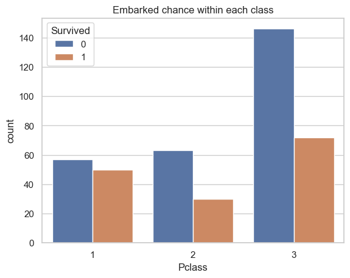

import kagglehub
# Download latest version
path = kagglehub.dataset_download("surendhan/titanic-dataset")TP7 - Corresponding Analysis (CA)
Exploratory Data Analysis & Unsuperivsed Learning
Course: PHAUK Sokkey, PhD
TP: HAS Sothea, PhD
Objective: Qualitative columns are often ignored in predictive models or analysis. It is important to notice that qualitative variables are as important as the quantitative ones when it comes to building predictive models or analyzing their connection within the dataset. In this TP, we will focus on identifying the associations between two qualitative variables.
The
Jupyter Notebookfor this TP can be downloaded here: TP7_CA.ipynb.
1. Data loading and Preprocessing
Titanic dataset contains information on the passengers aboard the RMS Titanic, which sank in 1912. It includes details like age, gender, class, and survival status.
A. Import the Titanic dataset from kaggle using: Titanic dataset.
- How many quantitative and qualitative variables are there in this dataset?
- Convert each column into its correct data type.
# Import data
import pandas as pd
data = pd.read_csv(path + "/titanic.csv")
data.head()| PassengerId | Survived | Pclass | Name | Sex | Age | SibSp | Parch | Ticket | Fare | Cabin | Embarked | |
|---|---|---|---|---|---|---|---|---|---|---|---|---|
| 0 | 892 | 0 | 3 | Kelly, Mr. James | male | 34.5 | 0 | 0 | 330911 | 7.8292 | NaN | Q |
| 1 | 893 | 1 | 3 | Wilkes, Mrs. James (Ellen Needs) | female | 47.0 | 1 | 0 | 363272 | 7.0000 | NaN | S |
| 2 | 894 | 0 | 2 | Myles, Mr. Thomas Francis | male | 62.0 | 0 | 0 | 240276 | 9.6875 | NaN | Q |
| 3 | 895 | 0 | 3 | Wirz, Mr. Albert | male | 27.0 | 0 | 0 | 315154 | 8.6625 | NaN | S |
| 4 | 896 | 1 | 3 | Hirvonen, Mrs. Alexander (Helga E Lindqvist) | female | 22.0 | 1 | 1 | 3101298 | 12.2875 | NaN | S |
data.dtypesPassengerId int64
Survived int64
Pclass int64
Name object
Sex object
Age float64
SibSp int64
Parch int64
Ticket object
Fare float64
Cabin object
Embarked object
dtype: object
SurvivedandPclassshould be considered categorical. Let’s convert them.
data['Survived'] = data.loc[:,'Survived'].astype(object)
data['Pclass'] = data.loc[:,'Pclass'].astype(object)
data = data.drop(columns=['PassengerId'])
print(f'Quantitative columns: {data.select_dtypes(include="number").columns}')
print(f'Qualitative columns: {data.select_dtypes(include="object").columns}')Quantitative columns: Index(['Age', 'SibSp', 'Parch', 'Fare'], dtype='object')
Qualitative columns: Index(['Survived', 'Pclass', 'Name', 'Sex', 'Ticket', 'Cabin', 'Embarked'], dtype='object')B. Are there any missing values? If so,
- Study the impact of missing value removal on the quantitative variables.
- Study the impact of missing value removal on the qualitative variables.
- Conclude the dynamic of the missing values and handle them.
- Remove redundant observations if there is any.
data.isna().sum()Survived 0
Pclass 0
Name 0
Sex 0
Age 86
SibSp 0
Parch 0
Ticket 0
Fare 1
Cabin 327
Embarked 0
dtype: int64- For column ‘Fare’, there is only one missing value. Therefore, we can simply drop it or impute it.
- For column ‘Cabin’, around \(80\%\) of this column are missing values. It is not helpful to try to impute or remove the rows with missing values. Threfore, we simply drop this column.
- The main column to be studied is ‘Age’. Therefore, we will study the impact of missing value removal from this column.
from sklearn.impute import SimpleImputer
data = data.drop(columns=['Cabin'])
sip = SimpleImputer(strategy='mean')
data['Fare'] = sip.fit_transform(data[['Fare']])- Impact on numerical columns
import matplotlib.pyplot as plt
import seaborn as sns
sns.set(style="whitegrid")
quant_cols = data.select_dtypes(include="number").columns
quant_cols
_, axs = plt.subplots(2, 3, figsize=(12, 5))
for i, va in enumerate(quant_cols[1:]):
sns.kdeplot(data=data, x=va, ax=axs[0,i])
axs[0,i].set_title(f'Distribution of {va} before removing NA')
sns.kdeplot(data=data.dropna(), x=va, ax=axs[1,i])
axs[1,i].set_title(f'Distribution of {va} after removing NA')
plt.tight_layout()
plt.show()- Impact on categorical columns
qual_cols = data.drop(columns=['Name', 'Ticket']).select_dtypes(include="object").columns
qual_cols
_, axs = plt.subplots(2, len(qual_cols), figsize=(18, 7))
for i, va in enumerate(qual_cols):
sns.countplot(data=data, x=va, ax=axs[0,i])
axs[0,i].set_title(f'Distribution of {va} before removing NA')
axs[0,i].bar_label(axs[0,i].containers[0])
sns.countplot(data=data.dropna(), x=va, ax=axs[1,i])
axs[1,i].set_title(f'Distribution of {va} after removing NA')
axs[1,i].bar_label(axs[1,i].containers[0])
plt.tight_layout()
plt.show()2. \(\chi^2\)-test and CA
The chi-square test is a statistical method used to determine if there is a significant association between two categorical variables. It tests the following hypotheses: \[\begin{cases} H_0:\text{ There is no association between the two variables (they are independent).}\\ H_1:\text{ There is an association between the two variables (they are not independent).} \end{cases}\] Under null hypothesis \(H_0\), \(\chi^2\)-statistic defined by \(\chi^2=\sum_{i,j}\frac{(O_{ij}-E_{ij})^2}{E_{ij}}\sim\chi^2((r-1)(c-1))\) where
- \(r,c\): the number of categories of the 1st and 2nd variable respectively.
- \(O_{ij}\): the observed frequency of \(i\)-th and \(j\)-th category of the 1st and the 2nd variable.
- \(E_{ij}\): the expected/theoretical frequency of \(i\)-th and \(j\)-th category of the 1st and the 2nd variable.
A. \(\chi^2\)-test for Pclass vs Embarked.
- Visualize the relationship between the two variables.
- Compute the \(\chi^2\) statistics of the pair
PclassandEmbarkedvariable. - Deduce the p-value of \(\chi^2\)-test of the two variables.
- Can we reject the null hypothesis \(H_0\) of the two variables being independent at \(95\%\) confidence level?
- Recall the assumptions of \(\chi^2\)-test. Is the result about reliable?
import numpy as np
from scipy.stats import chi2_contingency
ax = sns.countplot(data=data[["Pclass", "Survived"]], x="Pclass", hue="Survived")
ax.set_title("Embarked chance within each class")
plt.show()
# Contingincy table
df = pd.crosstab(data['Pclass'], data['Survived'])
print(df)
# Row profile
C = df.sum(axis=0)
R = df.sum(axis=1)
E = R.values.reshape(-1,1) @ C.values.reshape(-1,1).transpose()/df.sum().sum()
chi_stat = np.sum((df-E) ** 2/E).sum()
print(f'* Chi-square statistic: {chi_stat}')Survived 0 1
Pclass
1 57 50
2 63 30
3 146 72
* Chi-square statistic: 6.693869422819262c:\Users\hasso\AppData\Local\Programs\Python\Python312\Lib\site-packages\numpy\core\fromnumeric.py:86: FutureWarning:
The behavior of DataFrame.sum with axis=None is deprecated, in a future version this will reduce over both axes and return a scalar. To retain the old behavior, pass axis=0 (or do not pass axis)
from scipy.stats import chi2
# degree of freedom
dfr = 2
p_value = 1 - chi2.cdf(chi_stat, dfr)
print(f"The p-value associated with the chi-square statistic: {chi_stat} is {p_value}")The p-value associated with the chi-square statistic: 6.693869422819262 is 0.03519206276590603With p-value is close to zero, we can reject the null hypothesis of independence between the two variables with confidence level nearly 1.
B. Pclass vs Embarked:
- Perform \(\chi^2\)-test on this pair of variables.
- Perform CA on this pair of variables.
- Create
symmetric biplotof the resulting CA. - Interpret the result.
from scipy.stats import chi2_contingency
import prince
df = pd.crosstab(data['Pclass'], data['Embarked'])
chi2, p, dof, expected = chi2_contingency(df)
print(f'Chi-squrae staistic: {chi2} with p-value: {p}')
ca = prince.CA(n_components=2)
ca = ca.fit(df)Chi-squrae staistic: 82.83186678873668 with p-value: 4.373384811850251e-17row_coords = ca.row_coordinates(df)
col_coords = ca.column_coordinates(df)
# Plotting the results
plt.figure(figsize=(8, 6))
plt.scatter(row_coords[0], row_coords[1], c='red', s=100, label='Pclass')
plt.scatter(col_coords[0], col_coords[1], c='blue', s=150, label='Embarked')
class_label = {1: '1st', 2: '2nd', 3: '3rd'}
# Adding labels
for i, txt in enumerate(df.index.astype(object)):
plt.annotate(txt, (row_coords[0].iloc[i], row_coords[1].iloc[i]+0.03), color='red')
for i, txt in enumerate(df.columns):
plt.annotate(str(txt), (col_coords[0][i], col_coords[1][i]+ 0.03), color='blue')
plt.vlines(x=[0], ymax=0.7, ymin=-0.7, linestyles='--')
plt.hlines(y=[0], xmax=0.75, xmin=-0.75, linestyles='--')
plt.title('Correspondence Analysis: Pclass by Embarked')
plt.xlabel('Dimension 1')
plt.ylabel('Dimension 2')
plt.legend()
plt.grid()
plt.show()C:\Users\hasso\AppData\Local\Temp\ipykernel_17636\1543237411.py:16: FutureWarning:
Series.__getitem__ treating keys as positions is deprecated. In a future version, integer keys will always be treated as labels (consistent with DataFrame behavior). To access a value by position, use `ser.iloc[pos]`
According to this map, it’s clear that
- the 1st class passengers mostly embarked from Cherbourg
- 2nd class and some 3rd passengers embarked from Southampton
- Queenstown is the rare category (deviated away from the origin than other variables) of Embarked and seem to be associated with the third class passengers than the rest.
3. Eye and Hair color
Study the connection between eye and hair colors from the Eye & Hair Color dataset available in kaggle as Hair Eye Color.
import kagglehub
# Download latest version
path = kagglehub.dataset_download("jasleensondhi/hair-eye-color")
data = pd.read_csv(path+'/HairEyeColor.csv')
data.head()| Unnamed: 0 | Hair | Eye | Sex | Freq | |
|---|---|---|---|---|---|
| 0 | 1 | Black | Brown | Male | 32 |
| 1 | 2 | Brown | Brown | Male | 53 |
| 2 | 3 | Red | Brown | Male | 10 |
| 3 | 4 | Blond | Brown | Male | 3 |
| 4 | 5 | Black | Blue | Male | 11 |
- We sum along variable ‘Sex’ as we are interested in the relation between ‘Hair’ and ‘Eye’. We compute the join distribution of these two variables from the join frequency as follow:
df = data.pivot_table(index='Hair', columns='Eye', values='Freq', aggfunc='sum', fill_value=0)
df| Eye | Blue | Brown | Green | Hazel |
|---|---|---|---|---|
| Hair | ||||
| Black | 20 | 68 | 5 | 15 |
| Blond | 94 | 7 | 16 | 10 |
| Brown | 84 | 119 | 29 | 54 |
| Red | 17 | 26 | 14 | 14 |
- We perform \(\chi^2\)-test on the two variables
chi2, p, dof, expected = chi2_contingency(df)
print(f'Chi-squrae staistic: {chi2} with p-value: {p}')Chi-squrae staistic: 138.28984162600827 with p-value: 2.3252867870988044e-25With such a low p-value, we can reject the null hypothesis the independency hypothesis between the two
import prince
ca = prince.CA(n_components=3).fit(df)
print(f'Variance explained by the first two dimensions:\n {ca.eigenvalues_summary}')Variance explained by the first two dimensions:
eigenvalue % of variance % of variance (cumulative)
component
0 0.209 89.37% 89.37%
1 0.022 9.51% 98.89%
2 0.003 1.11% 100.00%import plotly.io as pio
pio.renderers.default = 'notebook'
ca.plot(df, show_column_labels=True, show_row_markers=True, show_row_labels=True)The first two dimensions can explain more than 98% of the total inertia of the data. Based on this biplot, one can see the association between eye and hair color as follow:
- People who are blond tend to have blue eye color.
- People with red hair color tend to have green eye color. Moreover, this appears to be rare eye color as it deviates away from the origin.
- The graph also suggest that people with hazel eye color seen to have brown hair color and also red.
- Lastly, black hair people are likely to have brown eye color.
4. Countries and languages
Reproduce results of the association between countries and primary language spoken within those countries conducted here. The contingency table of country of residence and primary language spoken is given below:
| Country Language | English | French | Spanish | German | Italian | Total |
|---|---|---|---|---|---|---|
| Canada | 688 | 280 | 10 | 11 | 11 | 1000 |
| USA | 730 | 31 | 190 | 8 | 41 | 1000 |
| England | 798 | 74 | 38 | 31 | 59 | 1000 |
| Italy | 17 | 13 | 11 | 15 | 944 | 1000 |
| Switzerland | 15 | 222 | 20 | 648 | 95 | 1000 |
| Total | 2248 | 620 | 269 | 713 | 1150 | 5000 |
- You should work out this part as a real practical task by following this article.
# To do